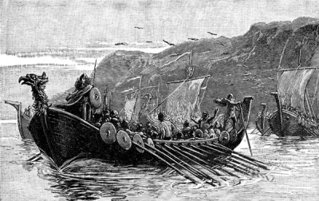

A História do Verdadeiro Rei Ragnar Lothbrok

O mais famosos dos heróis nórdicos e um pesadelo vivo para a França e Inglaterra, Ragnar Lodbrok foi engolfado pela lenda em torno de seu nome. É atribuída a ele uma descendência direta de Odin, o que seria capaz de explicar seus grandes feitos. Analisar o homem por trás da lenda é um grande desafio, já que as fontes são escassas, confusas e misturam lenda com realidade. É aceito que Ragnar era um dane que viveu durante o governo de Horik I, no século IX e comandou a imensa frota de navios que saqueou Paris em 845.
Seu nome faz referência a roupa que costumava usar. Lodbrok pode ser traduzido como “calças-peludas”. E pode-se dizer que foi um rei para a Suécia e Dinamarca, de acordo com o Gesta Danorum, escrito por Saxo Grammaticus, entre os séculos XII e XIII. Ragnar teria sido filho de Sigurd Ring, um rei sueco que conquistou a Dinamarca, membro da linhagem Ynglings, a quem sempre foram atribuídos feitos lendários nas Sagas, além de, como dito acima, uma ligação direta com o próprio Odin.
Acredita-se que Ragnar tenha saqueado a França inúmeras vezes, usando os rios para navegar com sua frota até o coração do império Franco. Fontes relatam que na sua mais notável investida, em Paris no ano de 845, ele não queimou uma única casa, já que aceitou o suborno do Rei Charles, o Calvo, que pagou a ele mais de 7000 libras de prata. Com uma armada de mais de 5000 guerreiros, Ragnar partiu até o estuário do rio Siena, saqueando com afinco cada uma das cidades que pôde encontrar em seu caminho, incluindo Rouen, até que finalmente chegasse em Paris no dia 28 de Março, segundo a tradição. Diante da facilidade em saquear a cidade, já que o próprio rei o subornou com uma quantia extremamente generosa de prata, não é difícil de imaginar o porque dele ter voltado lá inúmeras vezes depois.
Sendo um homem engenhoso, Ragnar preferia atacar cidades cristãs nos dias de maior festejo, pois assim encontraria a população desprotegida e despreparada para um ataque relâmpago e irrefreável. Desde que sentiu o gosto da conquista, ele jamais parou, levando uma vida muito bem sucedida de “pirataria”. Costumava contar aos outros que só fazia isso, de não deixar de aventurar-se jamais, pois não desejava ser superado por seus filhos que também eram valorosos guerreiros que serão tratados aqui num futuro próximo. Certamente uma espécie de disputa familiar, uma rinha interna, que só os motivava a busca de novas e arriscadas conquistas.
Quando voltou sua atenção para a Inglaterra, Ragnar encontrou seu fim. Depois de alguns saques à região, acabou sendo capturado pelo Rei Aelle da Nortúmbria, que ordenou sua execução arremessando-o em um fosso cheio de serpentes venenosas. De acordo com a lenda, Ragnar lutou como pôde com os animais peçonhentos, numa tentativa de ainda assim merecer seu lugar no Valhalla. Mesmo inchado e abatido pelo veneno das serpentes, ele cantou e suplicou para que os ventos no norte levassem seu apelo aos seus filhos. Esta canção é conhecida como Krákumál e provavelmente foi criada no século XII, onde Ragnar clamou uma vingança de sangue, o único meio para que sua alma desonrada pelo veneno fosse merecedora do Valhalla. Ivar, Sem Ossos e Ubbe, ambos filhos de Ragnar, partiram para vingança assim que ouviram a história. Compondo um imenso grupo de guerreiros (hoje chamado de “Grande Invasão Bárbara”), partiram para a Nortúmbria onde conseguiram vingar Ragnar, submetendo o rei Aelle à execução da Águia de Sangue, um terrível ritual reservado aos maiores inimigos do povo do norte.
Apesar de ser considerado quase como um herói em sua Escandinávia nativa, os relatos confiáveis sobre sua vida são apenas esboços, baseados principalmente em antigas sagas dos vikings. Até mesmo a datação de seu reino é incerta: existem fontes que o datam de 750 a 794, ao passo que outras o consideram de 860 a 865. Nenhum dos dois períodos confere com o que se conhece dele: é provável que ele tenha tido poder como um barão guerreiro de cerca de 835 até sua morte em 865. Provavelmente só foi considerado rei nos últimos cinco anos de sua vida.
As crônicas anglo-saxônicas, ao citar a grande invasão bárbara de 865-867, nomeia como líderes os irmãos dinamarqueses Ivar e Ubba, supostamente filhos de Ragnar.
